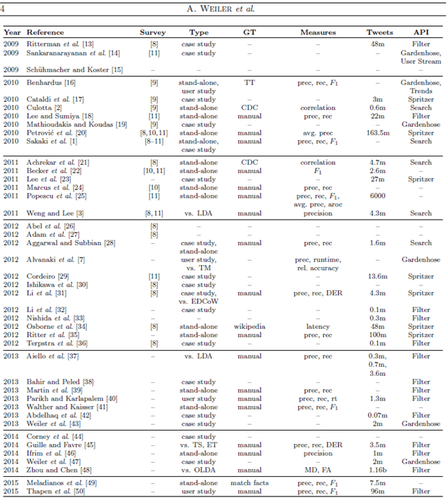

Data publicării: 22.03.2017
Autor articol: Adrian Iftene
Introducere
Popularitatea Twitter ca sursă de știri și de noutăți a crescut foarte mult în ultimii ani. În articolul “Survey and Experimental Analysis of Event Detection Techniques for Twitter” (Weiler et al., 2016) autorii prezintă cele mai folosite tehnici și apoi realizează o analiză comparativă a acestora. Pentru a le putea compara, autorii au propus câteva metrici pentru a face analize atât cantitative, cât și calitative.
Structura lucrării (Weiler et al., 2016) este următoarea:
Lucrarea începe cu o secțiune Introductivă, unde autorii prezintă serviciile de microblogging, insistând pe Twitter, una din rețelele cele mai populare. Twitter este una din rețelele cele mai folosite de utilizatori pentru a se ține la curent cu noutățile, aici obținând știri despre dezastre naturale, despre epidemii sau despre ce se întâmplă în alegerile politice. Cei ce au abordat această tematică, au folosit mai multe tehnici, pentru a identifica evenimente (un “eveniment” fiind definit ca o întâmplare care apare în lumea reală, într-o anumită locație geografică și pentru o anumită perioadă de timp). De asemenea, autorii precizează faptul că abordările existente au făcut evaluări calitative pentru a evidenția beneficiile abordării lor, față de abordări similare, doar câteva făcând și evaluări cantitative sau comparații cu alte soluții similare.
Secțiunea a doua a lucrării, prezintă cele mai importante abordări din domeniul identificării de evenimente. Tehnicile existente au fost folosite pentru a identifica dezastre, probleme în trafic, știri, erupții, epidemii, identificare de sentimente, etc. Metodele cele mai folosite au fost bazate pe trei tehnici de bază: (1) bazate pe clusterizare, (2) bazate pe model și (3) bazate pe modelare de semnale. Tot în această secțiune se prezintă și cum s-a făcut în trecut evaluarea abordărilor ce au făcut identificare de evenimente. Pentru comparare, s-au folosit metrici precum precizia și recall-ul, coerența/relevanța și diversitatea, având în spate o evaluare făcută cu ajutorul adnotatorilor umani.

În Tabela 1, sunt date abordările existente și modul în care au fost ele evaluate. După cum se poate observa, coloana GT conține modul în care s-a făcut evaluarea, iar metoda “manuală” este cea mai folosită. Tot în această secțiune, sunt prezentate corpusurile folosite în evaluare, fiind foarte important să ai un corpus comun, atunci când dorești să compari mai multe abordări între ele. Majoritatea autorilor au creat corpusuri proprii cu milioane de tweets, aceștia precizând perioada în care au strâns tweets, fără a da detalii legate de folosirea filtrelor: pentru localizare, limbă sau altceva.
Secțiunea 3 conține o descriere a metricilor folosite pe parcursul evaluării abordărilor existente de către autorii articolului. Aceștia au apelat la metricile de la Google (Google Similarity Distance) și de la Flickr (Flickr Distance), deoarece au considerat că e abordarea cea mai potrivită. De asemenea, autorii au definit noțiunile de “eveniment” și “tehnică de identificare a evenimentelor”. Pentru a evalua performanța în timp real, autorii definesc noțiunile de “viteză de procesare” (En: throughput) și “memoria utilizată” în cadrul procesării datelor. Măsura DEDR (duplicate event detection rate) ne spune procentul de evenimente identice identificate de sistemul evaluat. Precizia și recall-ul sunt calculate făcând trimitere la binecunoscute site-uri de știri, precum CNN, CBSNews, USAToday, BBC și Reuters.
Secțiunea 4, face o trecere în revistă a abordărilor existente, iar ca sistem de referință folosesc un sistem dezvoltat de grupul autorilor, Niagarino. Autorii, au considerat 9 abordări diferite, pe care le prezintă insistând pe elementele originale folosite la implementare.
Secțiunea următoare face evaluarea comună a celor 9 abordări în același context stabilit în articolul de față. Se prezintă contextul comun tuturor abordărilor și rezultatele obținute la evaluarea de performanță a executării aplicațiilor (viteză și memorie utilizată) și evaluarea specifică identificării de evenimente (evenimente duplicat, precizie, recall, F1). Secțiunea 6, fiind dedicată discuțiilor pe tema evaluării, fiind prezentate limitările întâlnite.
Articolul se încheie cu concluzii, prezentarea avantajelor folosirii abordării curente, limitările care au apărut și modul cum ar putea fi depășite, muncă viitoare, mulțumiri și bibliografie. Remarc faptul că bibliografia conține 60 de titluri importante din zona identificării de evenimente.
Abordări existente folosite în identificarea de evenimente pe Twitter
O parte consitentă a articolului (Weiler et al., 2016) este dedicată prezentării principalelor tehnici folosite în indentificarea de evenimente pe Twitter și modului în care autorii au evaluat rezultatele obținute. De regulă, aceste abordări au adoptat definiția “evenimentului” introdusă de cercetarea pe domeniul identificării de topică și tracking (TDT – Topic Detection and Tracking), care se referă la o întâmplare din lumea reală, care are asociate o locație geografică și o anumită perioadă de timp, bine determinate. Majoritatea abordărilor au ținut cont de faptul că mesajele de pe Twitter sunt scurte, conțin spam, greșeli de scriere, prescurtări, un limbaj specific, etc. În continuare vom vedea pe scurt cele mai importante abordări și câteva din elementele caracteristice folosite în evaluare.
(Benhardus, 2010) prezintă o abordare în care s-au monotorizat evenimentele ce au avut loc în USA. Pentru a-și evalua rezultatele autorii au comparat într-o primă etapă rezultatele obținute cu topicurile la modă de pe Twitter. La al doilea pas au folosit adnotatori umani, care au adnotat manual datele colectate. (Cullota, 2010) a abordat domeniul evenimentelor ce au legătură cu epidemii. Folosind API-ul de la Twitter au filtrat tweets folosind cuvinte specifice, pe o perioadă de 10 săptămâni, între februarie 2010 și aprilie 2010. Dacă în primul caz au obținut un scor pentru F1 între 0.2 și 0.3, în al doilea caz au obținut un scor pentru F1 cuprins între 0.6 și 0.7.
În (Lee și Sumiya, 2010), autorii au lucrat pe detectarea evenimentelor având la bază coordonatele geografice, folosind o colecție de date adnotate manual, în contextul festivalelor dedicate zilelor orașelor în Japonia. Folosind API-ul de la Google au obținut în jur de 22 milioane de tweets postate în zona geografică a Japoniei, în perioada iunie-iulie 2010. În urma evaluării au obținut un recall foarte bun de 0.87 (au detectat 13 din 15 evenimente), dar o precizie foarte slabă 0.018 (doar 13 din cele 724 raportate au fost identificate corect).
(Petrovic et al., 2010) au lucrat pe un flux de date de la Twitter, folosind un fișier în care evenimentele au fost adnotate manual. Setul de date folosit pentru evaluare conținea 163.5 milioane de tweets, colectate pe o perioadă de șase luni. Autorii au demonstrat că sistemul lor e capabil să detecteze evenimentele mai importante cu o precizie rezonabilă, iar calitatea poate fi îmbunătățită luând în considerare entropia.
(Sakaki et al., 2010) au construit un sistem pentru detectarea în timp real al evenimentelor folosind utilizatorii Twitter pe post de senzori. Sistemul este construit pentru a detecta evenimente pentru identificarea dezastrelor (de exemplu, detectarea cutremurilor se face folosind un filtru ce conține cuvântul “cutremur”). Au folosit 597 exemple pozitive, ce raportau cutremure. Cel mai bun scor obținut de ei pe durata experimentelor pe care le-au realizat a fost de 0.87 pentru recall, 0.66 pentru precizie și 0.73 pentru scorul F1.
(Becker et al., 2011) au propus un sistem pentru identificarea evenimentelor pe Twitter. Pentru a-și evalua sistemul, au colectat 2.6 milioane de tweets în februarie 2010. Au folosit datele din primele două săptămâni adnotate cu ajutorul adnotatorilor umani, pentru a-și antrena sistemul și datele din celelalte două săptămâni, pentru a-și evalua sistemul. Pentru a-și evalua performanțele fiecărui clasificator realizat, au folosit scorul F1.
TwitInfo, construit de (Marcus et al., 2011), este o unealtă ce permite agregarea și vizualizarea informațiilor asociate evenimentelor de pe microbloguri. Evaluarea lor folosește date adnotate manual despre meciurile de fotbal și date adnotate automat despre cutremure din US Geological Survey. Pentru evenimentele legate de meciurile de fotbal, au obținut rezultate de 0.77 pentru precizie și recall (17 din 22 de evenimente au fost identificate). Pentru cutremure, scorul a fost de 0.14 (6 din 44) pentru precizie și 1.0 pentru recall (5 din 5).
În (Popescu et al., 2011), autorii și-au evaluat activitatea de detectarea a evenimentelor de pe Twitter folosind un fișier cu 5040 de adnotări, din care 2249 reprezentau evenimente, iar 2791 nu reprezentau evenimente. Tehnica lor, denumită EventBasic, a obținut 0.691 pentru precizie, 0.632 pentru recall, 0.66 pentru scorul F1.
(Weng și Lee, 2011) au folosit tehnica EDCoW și au evaluat sistemul construit de ei folosind un set de date foarte restricționat, conținând tweets doar de la primii 1000 de utilizatori din zona Singapore. De asemenea, au folosit filtre pentru a avea doar cuvinte unice în setul de date, rezultând doar 8,140 cuvinte unice. În evaluarea lor, au aplicat EDCoW pentru a identifica evenimente pentru fiecare zi din iunie 2010. Precizia obținută de ei a avut o valoare de 0.76 (16 din 21 de evenimente au fost identificate).
(Aggarwal și Subbian, 2012) au lucrat în două moduri: (1) inițial au folosit un model nesupervizat pentru a identifica evenimente, (2) mai apoi au folosit un model supervizat ce folosea un corpus construit de ei pentru a-și evalua precizia și recall-ul pe două evenimente (criza nucleară din Japonia și protestul din Uganda). Pentru primul model, ei au obținut o valoare de 0.525 (precizie) și 0.62 (recall), în timp ce pentru al doilea model au obținut o precizie de 1.0 și o valoare de 0.6 pentru recall.
(Alvanaki et al., 2012) au realizat o evaluare bazată pe decizia adnotatorilor umani. Pentru asta, ei au creat un site web ce afișa utilizatorilor rezultatele de la sistemul construit de ei enBlogue (ENB) și de la TwitterMonitor (TM) (Mathioudakis și Koudas, 2010). Din punct de vedere al preciziei, tehnica ENB a fost mai bună decât TM. În medie, ENB a detectat 2.5 din 20 de evenimente, pe când TM a detectat doar 0.8.
Twevent, propus în (Li et al., 2012), include o tehnică bazată pe segmentare pentru a detecta evenimente. Abordarea a fost evaluată prin comparație cu EDCoW folosind aceleași date de intrare din (Weng și Lee, 2011). Rezultatele evaluării lor au indicat faptul că Twevent a obținut rezultate mai bune ca EDCoW din punct de vedere al preciziei și al recall.
În (Osborne et al. 2012) s-a prezentat un studiu în care autorii calculau cea mai mică distanță dintre prima apariție a unui eveniment pe Twitter și cel mai apropiat titlu din paginele Wikipedia. Experimentele au arătat că pe Twitter informațiile ajung mai repede decât pe Wikipedia, ceea ce era de așteptat. În (Ritter et al., 2012) au prezentat o metodă de identificare a evenimentelor din orice domeniu pe Twitter.
În contextul proiectului SocialSensor, (Aiello et al., 2013) au comparat șase metode de identificare a topicurilor (BNGram, LDA, FPM, SFPM, Graph-based, și Doc-p) folosind trei seturi de date de pe Twitter ce conțin evenimente majore. Ei au observat că metoda BNgram obține întotdeauna cel mai bun recall, cu o precizie relativ bună.
(Parikh și Karlapalem, 2013) au evaluat sistemul construit de ei (ET) pe două seturi de date: unul oferit de VAST Challenge 2011, iar celălalt publicat pe baza utilizatorilor US din ianuarie 2013. Pentru setul VAST, ET a detectat un total de 23 evenimente, din care două evenimente erau triviale și nesemnificative. Astfel, precizia a fost de 0.91, pe când pentru al doilea set de date au obținut o precizie de 0.93.
MABED, propus de (Guille și Favre, 2014), include o tehnică de identificare a anomaliilor pe Twitter. Ei au făcut experimente pe engleză și franceză. În experimentele pe care le-au făcut au arătat că MABED se comportă mai bine ca ET și TS.
În final, (Meladianos et al., 2015) au folosit mai multe tehnici pentru a identifica evenimente ce au legătură cu meciurile de fotbal. Ei au creat resurse preluând date de pe un site cu transmisii live a meciurilor și a rezumatelor acestora. Experimentele au arătat comportamentul bun al sistemului lor și posibilitatea de a identifica sub-evenimente în cadrul fiecărui meci.
Concluzii
Detectarea de evenimente pe Twitter este o activitate abordată de mai multe echipe de cercetare. Activitatea de până acum a avut în vedere patru direcții importante: detectarea de evenimente naturale (precum cutremure), identificarea opiniilor politice (în perioada alegerilor în primul rând din US), observarea epidemiilor care apar pe glob și identificarea de sentimente în postările de pe Twitter.
Mulți autori au folosit date proprii colectate de ei pe anumită perioadă de timp, unii folosind restricții suplimentare precum: fie restricționând zona sau limba în care acestea sunt postate, fie folosind cuvinte cheie în filtrare, fie folosind criterii suplimentare asupra utilizatorilor, care au postat informațiile respective, etc.
Referințe bibliografice
- Aggarwal, C. C., Subbian, K. (2012) Event Detection in Social Streams. Proc. SIAM Intl. Conf. on Data Mining (SDM), pp. 624-635.
- Aiello, L. M., Petkos, G., Martin, C., Corney, D., Papadopoulos, S., Skraba, R., Goker, A., Kompatsiaris, I. (2013) Sensing Trending Topics in Twitter. IEEE Transactions on Multimedia, 15, 1268-1282.
- Alvanaki, F., Michel, S., Ramamritham, K., Weikum, G. (2012) See What’s enBlogue: Real-time Emergent Topic Identification in Social Media. Proc. Intl. Conf. on Extending Database Technology (EDBT), pp. 336-347.
- Becker, H., Naaman, M., Gravano, L. (2011) Beyond Trending Topics: Real-World Event Identification on Twitter. Proc. Intl. Conf on Weblogs and Social Media (ICWSM), pp. 438-441.
- Benhardus, J. (2010) Streaming Trend Detection in Twitter. National Science Foundation REU for Artificial Intelligence, Natural Language Processing and Information Retrieval, University of Colarado, Final report, pp. 1-7.
- Culotta, A. (2010) Towards Detecting Influenza Epidemics by Analyzing Twitter Messages. Proc. Workshop on Social Media Analytics (SOMA), pp. 115-122.
- Guille, A., Favre, C. (2014) Mention-anomaly-based Event Detection and Tracking in Twitter. Proc. Intl. Conf. on Advances in Social Networks Analysis and Mining (ASONAM), pp. 375-382.
- Lee, R., Sumiya, K. (2010) Measuring Geographical Regularities of Crowd Behaviors for Twitter-based Geosocial Event Detection. Proc. Workshop on Location Based Social Networks (LBSN) in conjunction with Intl. Conf. on Advances in Geographic Information Systems (SIGSPATIAL), pp. 1-10.
- Li, C., Sun, A., Datta, A. (2012) Twevent: Segment-based Event Detection from Tweets. Proc. Intl. Conf. on Information and Knowledge Management (CIKM), pp. 155-164.
- Marcus, A., Bernstein, M. S., Badar, O., Karger, D. R., Madden, S., Miller, R. C. (2011) TwitInfo: Aggregating and Visualizing Microblogs for Event Exploration. Proc. Intl. Conference on Human Factors in Computing Systems (SIGCHI), pp. 227-236.
- Mathioudakis, M., Koudas, N. (2010) TwitterMonitor: Trend Detection over the Twitter Stream. Proc. Intl. Conf. on Management of Data (SIGMOD), pp. 1155-1158.
- Meladianos, P., Nikolentzos, G., Rousseau, F., Stavrakas, Y., Vazirgiannis, M. (2015) Degeneracy-Based Real-Time Sub-Event Detection in Twitter Stream. Proc. Intl. Conf. on Weblogs and Social Media (ICWSM), pp. 248-257.
- Parikh, R., Karlapalem, K. (2013) ET: Events from Tweets. Proc. Intl. Conf. Companion on World Wide Web (WWW), pp. 613-620.
- Petrovic, S., Osborne, M., Lavrenko, V. (2010) Streaming First Story Detection with Application to Twitter. Proc. Conf. of the North American Chapter of the Association for Computational Linguistics (HLT), pp. 181-189.
- Popescu, A.-M., Pennacchiotti, M., Paranjpe, D. A. (2011) Extracting Events and Event Descriptions from Twitter. Proc. Intl. Conf. Companion on World Wide Web (WWW), pp. 105-106.
- Osborne, M., Petrovic, S., McCreadie, R., Macdonald, C., Ounis, I. (2012) Bieber no more: First story detection using Twitter and Wikipedia. Proc. Workshop on Time-aware Information Access (TAIA) in conjunction with Intl. Conf. on Research and Development in Information Retrieval (SIGIR).
- Ritter, A., Mausam, Etzioni, O., Clark, S. (2012) Open Domain Event Extraction from Twitter. Proc. Intl. Conf. on Knowledge Discovery and Data Mining (SIGKDD), pp. 1104-1112.
- Sakaki, T., Okazaki, M., Matsuo, Y. (2010) Earthquake Shakes Twitter Users: Real-time Event Detection by Social Sensors. Proc. Intl. Conf. on World Wide Web (WWW), pp. 851-860.
- Weiler, A., Grossniklaus, M., Scholl, M. H. (2016) Survey and Experimental Analysis of Event Detection Techniques for Twitter. The Computer Journal, September 2016. doi: 10.1093/comjnl/bxw056
- Weng, J., Lee, B.-S. (2011) Event Detection in Twitter. Proc. Intl. Conf on Weblogs and Social Media (ICWSM), pp. 401-408.